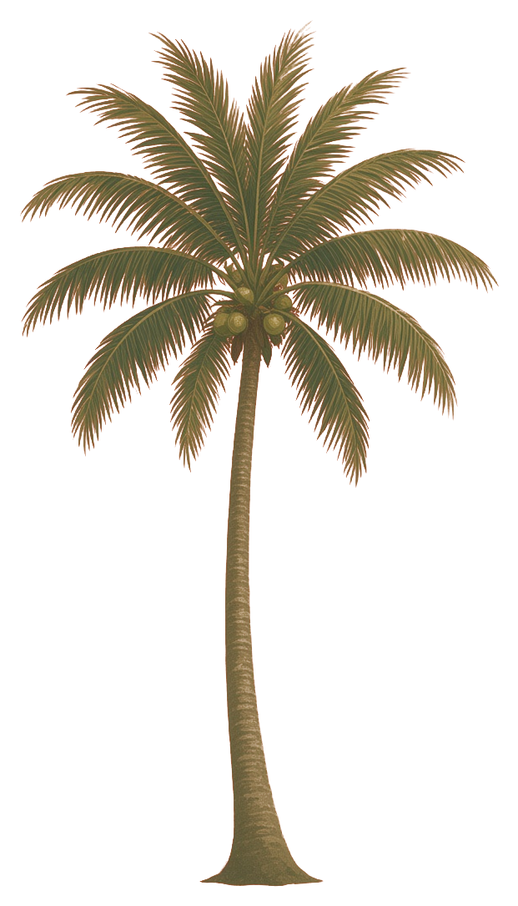

Welcome
Dinner
Fri, April 16 · 7–11 pm
[[On the beach]] · Barefoot linen & bright colours
We couldn’t find that name. Try your full name as it appears on your invitation, or text us at [[PHONE]] and we’ll sort it out.
The wedding of
April 16 – 17
Mayakoba, Riviera Maya, MX


We met the old-fashioned way: through friends who knew us better than we knew each other.
Rohan and Avanti grew up together on Staten Island in their earliest years — and years later, by complete chance, ended up in the same apartment building. That’s where Sonali and Avanti became neighborhood buddies: movie nights, dinners, and plenty of Avanti complaining about chronic singlehood. Meanwhile, Shubh and Rohan had their own rhythm — sports, nights out, and the kind of friendship that eventually turns into matchmaking.
When Shubh was finally single (and finally ready), Rohan suggested he date Avanti. They set us up on a true blind date: no numbers, no Instagram, no pre-stalking. Just two people walking into a room.
The rest might have been history — until Avanti tore her ACL. Shubh showed up as an incredible caretaker, the kind of steady kindness that makes everything clearer. Avanti was sold. Within a couple of months we were seeing each other every night, and eventually we moved in together.
What we share is simple and a little ridiculous in the best way: fitness and health, laughing until it hurts, cuddling, traveling, AI rabbit holes, the same kinds of food, being unapologetically bougie, and squeezing the most out of life. Above all, Avanti fell for how kind Shubh is — not just to her, but to everyone she loves.
And somehow, two childhood friends, one building, and one perfectly timed blind date got us here.
Schedule
Fri, April 16 · 7–11 pm
[[On the beach]] · Barefoot linen & bright colours

Sat, April 17 · Baraat by boat 3 pm, vows 4 pm
[[Canal lawn]] · Indian formal

Sat, April 17 · Cocktails 6:30 - 11pm
[[Beach club terrace]] · White tie

Sat, April 17 · 11:30 pm – late
[[Venue name]] · Keep the glam
Mayakoba sits between Playa del Carmen and Cancún on the Riviera Maya. Fly into Cancún, then it’s a straight run down the coast highway — book a private transfer ahead of time and the hotel will have you at check-in within the hour.
The main gateway, about 45 minutes to 1 hour by car. Direct flights from most major US, Canadian and European cities, so this is the one to book.
The new Felipe Carrillo Puerto airport, about 1 hour 15 minutes north by car. Fewer routes, but handy if you’re pairing the wedding with a few days in Tulum. [[Confirm]]
An island hop away: land on Cozumel, take the 45-minute ferry to Playa del Carmen, then a 15-minute drive. Scenic, but only worth it if the fares are irresistible.
We’ll share a recommended car service (and any group shuttle times) closer to the wedding. Skip renting a car — the resort has shuttles and bikes, and the canals have boats.
Everything happens inside Mayakoba, a gated resort community of four hotels threaded together by canals and a shared white-sand beach — so wherever you stay, you’re a boat ride from the party.
Our hotel
Home to the ceremony and reception, and where we’d love as many of you as possible to stay. Lagoon and beachfront suites with private plunge pools. We’ve reserved a room block at a special rate.
Nearby
Pool villas tucked into the mangroves, next door on the same canals. Serene, private and a short boat ride from the Rosewood.
The most relaxed option in the community, with big family-friendly pools and a lively beach club. Great value for groups.
Bright, modern and a little more playful — beachfront rooms, good restaurants and the closest to the main gate.
Travelling as a group or with kids? Playacar and the beachfront streets of Playa del Carmen have large rentals ten minutes down the road.
You are traveling across the globe to celebrate with us in Mexico, so your presence means the world to us and is all we ask for.
If you’d still like to contribute to our registry or honeymoon funds, please use the link below.
Registry